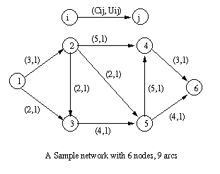
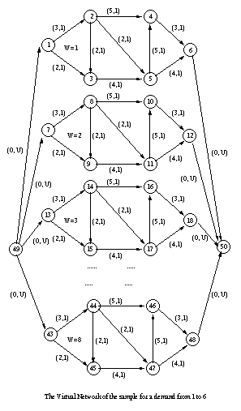
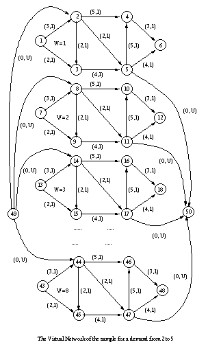

ReadMe file for AS3.C |
This is the readme file for my first Assignment code : as3.c
You can also download my another code: as2.c
as2.h
The usage of as2 is the same as as3.
Differenc between as2 / as3 :
| as2 | as3 |
|
|
How to compile:
How to execute:
Sample output: click here
File format:
| topo.dat | mino.dat |
| 6 9 --> 6 nodes 9 arcs 1 2 3 1 --> this arc is from 1 to 2 , cost 3, capacity 1 1 3 2 1 --> from 1 to 3, cost 2, capacity 1 2 3 2 1 --> from 2 to 3, cost 2, capacity 1 2 4 5 1 2 5 2 1 3 5 4 1 4 6 3 1 5 4 5 1 5 6 4 1 |
1 6 10 --> demand from 1 to 6 with 10 units 2 5 873 --> demand from 2 to 5 with 873 unit  |
| Virtual Network Data: 1 -> 6 | Virtual Network Data: 2 -> 5 |
|---|---|
|  |  |